Designers and AI-native engineering: Building real products with BMAD and AI-driven IDEs

25th of February, 2026
A designer's perspective on how AI-native engineering provides an opportunity to apply the timeless skills of problem-solving, empathy, and communication on an entirely new playing field.
AI is changing what it means to be skilled at something, and how quickly that change is happening has left many people wondering where they fit in. It’s hard not to notice a sense of trepidation around this in many industries, and I see it clearly in the product design community. I'd like to offer a more optimistic perspective.
At Nearform, we have been investing heavily in AI-native engineering (”AINE”): a way of working where AI tools are embedded into every stage of the product development process, not just bolted on at the end. Far from sidelining designers, this approach is creating new opportunities for people with exactly the skills designers have spent their careers developing. Problem solving. Communication. User empathy. The ability to hold complexity in your head and turn it into something clear and usable.
This article is a personal account of what that looks like in practice.
I'm a designer with 20+ years of experience, from graphic design, through video and motion, and on to product design, where I find myself today. Although much of the work I do at Nearform gets very technical, and I am always part of very technical conversations, I have rarely had to write code. HTML and CSS, back in the Web 2.0 days, were about my limit. However, exciting emerging AINE tools and techniques are making it easier to bridge that gap than I had ever thought possible. Maybe you can teach an old dog new tricks.
This article highlights how I, and other Nearform designers, are excited to embrace new ways of working. We are bringing our design backgrounds, communication skills, problem-solving ability, empathy, and facilitation experience to a new playing field. The tools have changed. The skills that make great products have not.
Let’s look in detail at a recent weekend project - a case study of building a fully functional web app as a designer with BMAD and a suite of AI tools in roughly three days.
What is Mileframe?
As a keen cyclist, I wanted to build a small web app around something I genuinely enjoy and would actually use - a side project that would give me hands-on experience with current AI tools and processes.
Mileframe is a web application for fitness enthusiasts who want to do more with their Strava activity data. Users connect their Strava account, pick an activity (a morning ride, a long run, an epic hike), and use a visual canvas editor to create a polished graphic combining their activity stats (distance, duration, elevation, speed, and more) with their GPS route overlaid on a customisable background.
The result is an exportable graphic for personal use (not positioned for social sharing, to align with Strava's data use terms) as a desktop/phone background or a print that could be framed on the wall.
Strava's default sharing options are functional but visually limited.
Mileframe fills that gap. Users can create a memorable activity image - No design skills required.
👉🏻 You can try Mileframe for yourself at https://mileframe.vercel.app/
What is BMAD?
Before diving into the weekend project itself, it’s important to explain BMAD, the method that guided my process.
BMAD (Breakthrough Method for Agile AI-Driven Development) is an AI-assisted development method of “Spec-Driven Development” that can be run inside your IDE (I use Cursor), through Claude Code (app or desktop), or with a CLI.
Rather than jumping straight into writing code, BMAD walks you through a structured planning process using a team of named AI agents, each with a specific role:
- Analyst: digs into the idea, runs market and competitive research, and shapes it into a formal project brief
- Product Manager: takes that brief and builds it into a full PRD, covering requirements, epics, and user stories
- Architect: defines the technical approach: system structure, APIs, data flows, and stack decisions
- Scrum Master: organises the work into sprints and refines stories into tasks the developer agent can actually execute
- Developer: writes the code, story by story, and does initial validation before handoff
- QA / Test Architect: owns quality: test plans, code review, and checking that what's been built matches what was specified
- UX Designer: keeps the user experience honest, covering interface design, usability, and frontend consistency
- Documentation Agent: generates technical and user-facing documentation throughout the process
The philosophy is that the quality of what you build is directly proportional to the quality of your planning. BMAD enforces that planning discipline, then uses it to drive a systematic sprint-based implementation. Just like a real project - Scoping > Discovery > Delivery.
At Nearform, we have always recognised and followed the above approach, carefully implementing it across our projects through our Ignite Workshops and discovery phases - focusing on cross-team collaboration to acquire and build extensive knowledge and documentation before any code is written and pushed.
Spec-Driven Development (BMAD, for example) accelerates and hardens this process, creating detailed project documentation that both AI and human engineers use to build solid products.
My plan
- Initial floating of the concept and speccing of the app in Claude to validate ideas and create context documents
- BMAD workflow in Cursor to properly plan out the project, creating full documentation along the way (PRD, Wireframes, Personas, Architecture, etc.)
- BMAD workflow to create Epics and User Stories in a full sprint backlog
- Incrementally refine UX/UI and features (I’ll do this with the native Cursor agents, but it could be done with further BMAD work, or by human engineers).
- Add my own branding and UI assets (and a basic design system - using Cursor agents to implement)
- Refine micro-interactions, add polish to set it apart from standard LLM Front-end output
- Test, test, test…
- Refine some more…
- Deploy and release (pending Strava approval 🙏)!
For refinements, I’ll use the Cursor agent or plan mode for small refinements and additions, but return to BMAD for major new features. Depending on the complexity of the task, I may use the latest (and sometimes more expensive) models like Anthropic's Opus 4.6, which I have found to get me out of a few problem loops in the past.
Switching from BMAD to the Cursor native agent at this stage will allow me to make the little-and-often visual and interaction refinements that I envisage. UI design involves a lot of trial and error, and BMAD (despite being more than suitable) would possibly be slightly too time-consuming and in-depth than required.
Idea validation and context document creation with Claude
Before installing BMAD or opening Cursor, I used Claude to pressure-test the idea and generate a set of starter documents. I set up a new Claude project and started with a rough brief:
"I want to build a web app that is integrated with the Strava API, which allows users to grab details of their activities. We want to get the key data: things like distance, mph, elevation, calories burnt, average watts, etc. Whatever is available. We also want to grab the shape of the route they took. With that data, users can choose from a selection of background styles, to superimpose their data on, using customisable styles. They will also be able to upload their own background images or choose from a selection of premium images, purchasable via Stripe. This allows them to create custom graphics optimised for Instagram posts, stories, reels, or larger format PDFs ideal for printing at A4, A3, A2 sizes."
Note - The Stripe (payments) integration, although a nice potential experiment, upon closer inspection, would have gone against Strava’s API terms, so I abandoned that feature later on in the process.
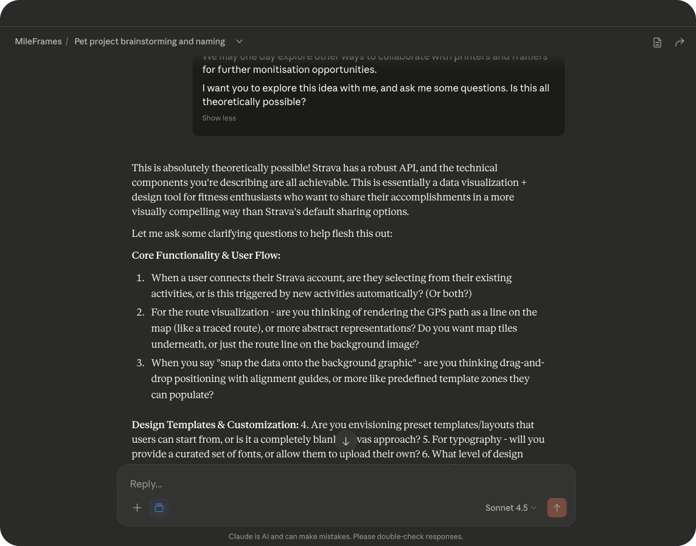
My initial exploration starts using ClaudeAfter a few rounds of clarifying questions, Claude produced four foundational (not too detailed) documents:
- Project Overview: vision, problem statement, target audience, and core value proposition
- Technical Specification: stack decisions, API design, database schema, and component architecture
- Architecture Diagrams: system diagrams, data flows, and sequence diagrams
- User Personas: five detailed personas representing the real people who'd use the app
Note: I intentionally stopped short of wireframes and detailed user flows at this stage. I wanted BMAD to help define those, scrutinise the brief, and improve it, rather than rubber-stamping decisions I'd already made. These are starter docs, intended to give BMAD some initial context, not full specs.
Cursor project setup, GitHub, and Vercel
With the context documents saved into a /docs folder in the project root, I asked Cursor to scaffold the tech stack: Next.js + React + TypeScript + Tailwind CSS, running on Node.js with Webpack (Turbopack available).
Having been focused on design throughout my career (very minimal coding experience), this was unfamiliar territory. I trusted Cursor to handle the dependencies and initial configuration.
A couple of minutes later: a working holding page!
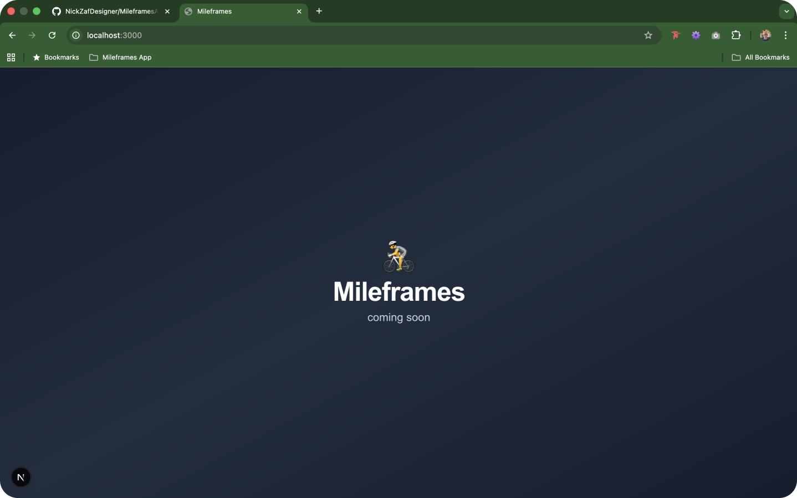
Allez, Allez, Allez!I created a new GitHub repo and tested a push by prompting Cursor to do it directly. I'd set up a Vercel project for GitHub to auto deploy.
Everything worked the first time. I then asked Cursor to install the latest version of BMAD. Within a couple of minutes, the framework was set up in the project and ready to use. If you’re not sure where to start (I wasn’t!) - just ask the question in the chat window, and Cursor (or whatever AI tool you decide to use) will guide you through the process.
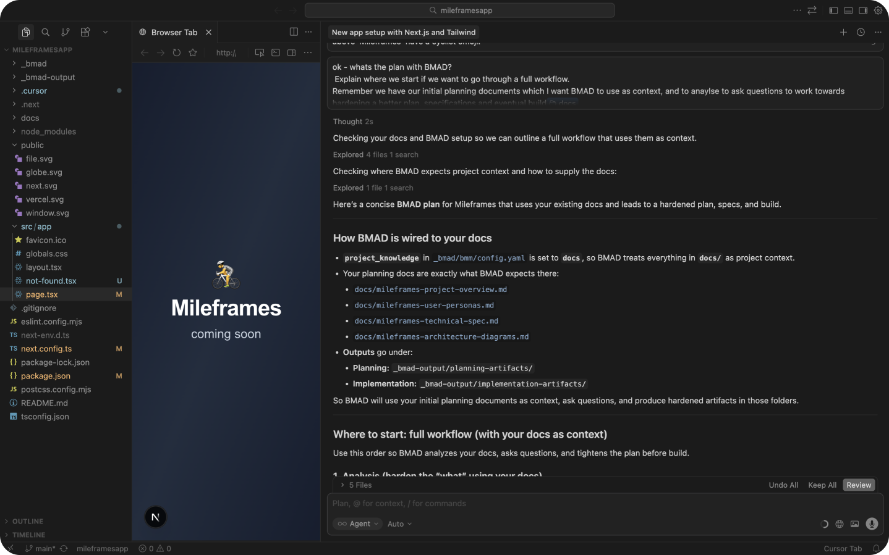
Getting BMAD runningBMAD planning begins
Different tools work slightly differently, but in Cursor, you can type @agent in the chat window to bring up a list of all the agents you now have at your disposal, ready to work with you.
I started by calling on the Analyst agent in a new chat, referencing the context docs. Mary (The agents have names, of course!) introduced herself and I prepared myself for all the questions!
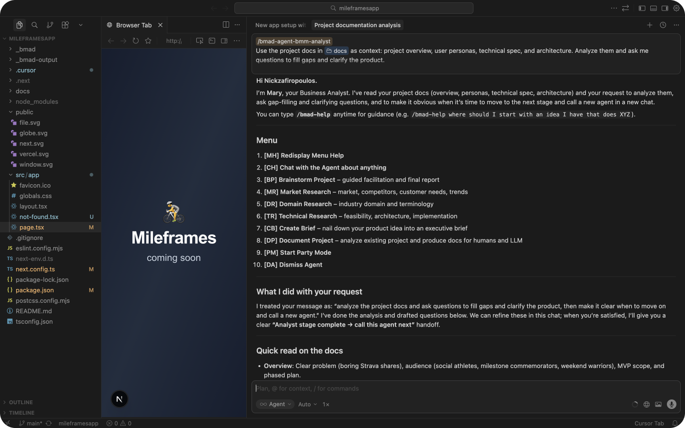
👋 Hi Mary!Getting deeper into the planning phase and working on product vision and value proposition, I was able to start Party Mode. I was expecting dance music and lasers, but I got something much more useful: a discussion among a group of agents who questioned, challenged, and aligned on Mary's work from their own areas of expertise.
Activating Party Mode at certain points to get input from other agents was extremely useful. It lets you consider the plan from a completely different lens. It felt like a collaborative discovery phase, only much faster and without the multiple coffees and pastries you'd normally consume.
It started to feel like a proper team collaboration, and it was good to see the questions you wish you'd asked getting covered.
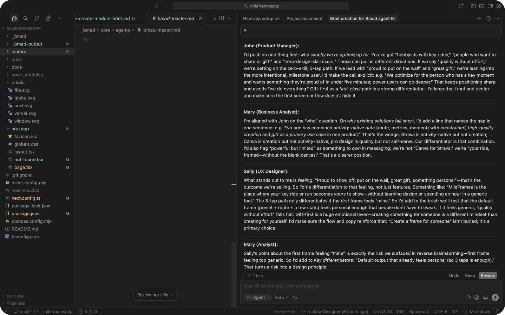
Party mode!At this stage, it was dawning on me that the whole BMAD workflow (even for simple software) would be a long process. But it should be. Thorough is a better word.
The discovery process needs to be thorough like this. It’s what sets a successful project apart from a not-so-successful one. I saw huge value in each step: creating user journeys for our key personas with the agents, and building incrementally towards a robust PRD. Each step felt logical, timely, and purposeful.
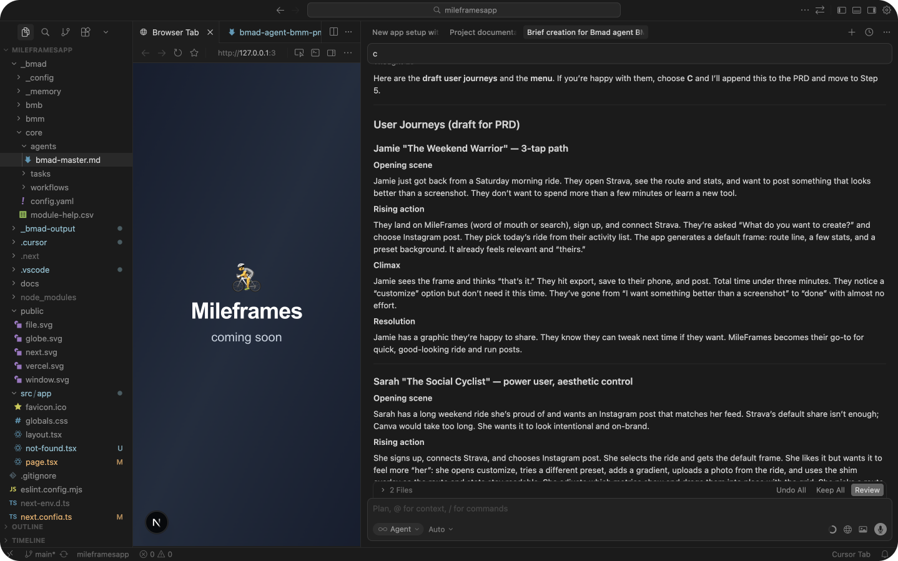
Starting to create our spec docsDesign direction and wireframes
I added some inspiration screenshots and explained my visual approach, then consulted with Sally (the UX agent) to check whether the branding concept would carry the user experience well.
No matter how many years of design experience you have, peer critiques are always valuable for checking that you’re on track. A good AI model can do a great job of validating your ideas or analysing your designs - either by showing them a simple, sketch, a screenshot, or with an MCP - A full Figma page full of designs.
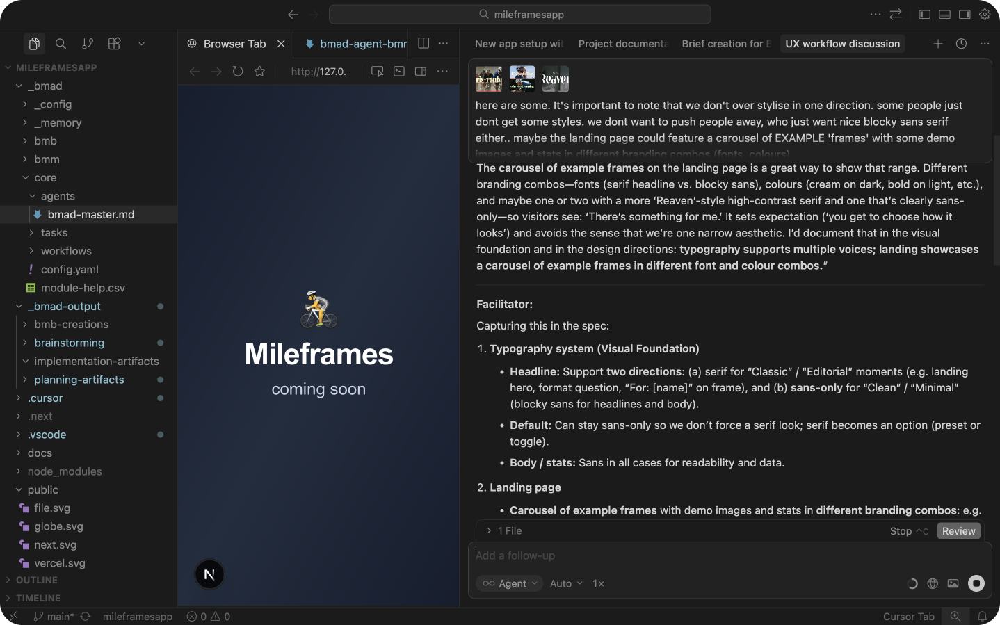
Working with Sally on some visual design direction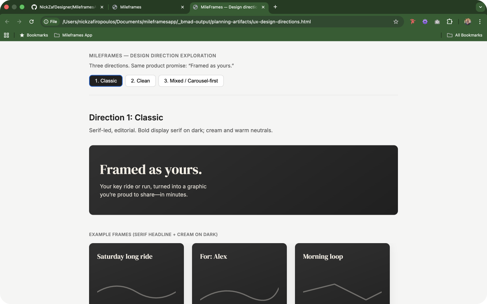
Basic - but it's a start...Creating design directions
BMAD’s design direction was output as HTML prototypes: very basic and the epitome of “lo-fi,” but nonetheless, a solid starting point for refinement.
These initial wireframe-style prototypes, alongside the other BMAD output documents, specs, and instructions are all starting to serve a very solid purpose: giving the build sprints something tangible to orientate around.
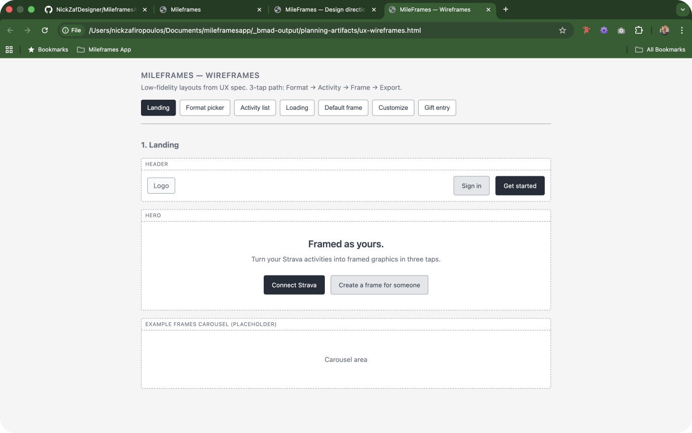
Very lo-fi wireframe prototypesBringing it into Figma AI
This felt very experimental (and I’m sure this statement will already be dated by the time this is published. Things are changing that fast…):
Pasting the HTML from the BMAD prototype directly into Figma's AI to generate structured screens, and then using Figma Make to intelligently link them together into a clickable prototype. I was quite impressed with the outcome - it gave us another level of fidelity - potentially helping the human team and stakeholders to start seeing the vision better.
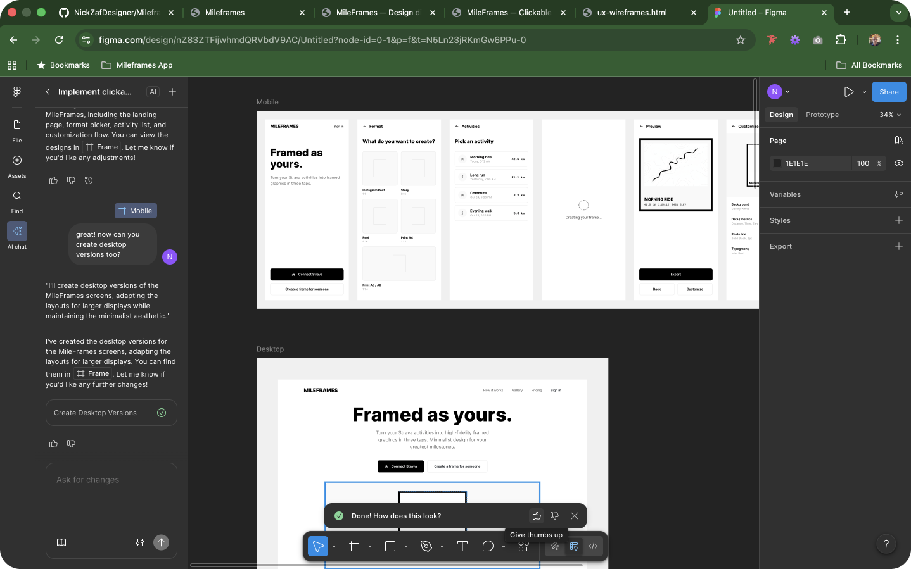
Figma AI’s interpretation of the prototype - getting more visualStill fairly low fidelity at this stage, but good enough to move forward. Full design system work will happen later on. Hopefully, as part of the BMAD-generated sprints, but if not, through my own refinement in using the Cursor agents.
Architecture and Epics
In a new chat, I ran the Create Architecture workflow, using the PRD, UX spec, and Figma link as inputs. BMAD's architect agent produced a detailed architecture document covering system components, data flows, and technical decisions.
Architecture doc
Next: Create Epics and Stories. BMAD broke the PRD's requirements down into epics and user stories, each with acceptance criteria. A Party Mode session confirmed the team was aligned on the level of detail.

Implementation readiness check
BMAD asked if I wanted to run a readiness assessment to confirm everything was in order. I thought this was an excellent way to summarise the work to date. In a project situation, a simple summary like this would do well to instill confidence in stakeholders and the team that all has been considered - or potentially highlight gaps that we could go back to BMAD to cover in more detail.
| Check | Result |
|---|---|
| Document discovery | PRD, Architecture, Epics, UX: all present, no duplicates |
| PRD analysis | 47 functional requirements and 5 non-functional requirements extracted |
| Epic coverage | 47/47 requirements covered (100%), no gaps |
| UX alignment | Fully aligned with PRD and Architecture |
| Epic quality | Acceptance criteria and traceability confirmed |
| Final verdict | ✅ READY for implementation |
Sprint planning and implementation
With planning signed off, Bob (Scrum Master) produced the sprint plan. The implementation cycle for each story follows a consistent rhythm:
- Create story (acceptance criteria and subtasks)
- Dev story (agent writes the code)
- Test story
- Fix any issues
- Mark complete and move to the next story
The automated sprint experiment
I asked BMAD to use the command (/bmad-bmm-sprint-run-all) to run through all stories in the sequence sequentially without manual intervention between steps.
This is not something I'd recommend on a real project, as human review at each stage matters, but as an experiment on a personal project, it was interesting and certainly a time saver. The command is also resumable: if interrupted, it can be run again and pick up from where it left off.
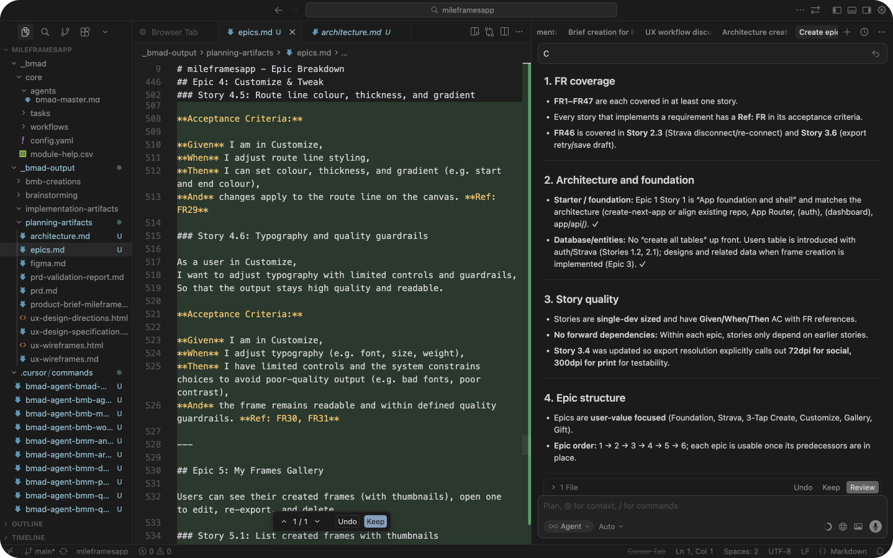
Automating the processIntegrations
To make the whole thing work, I had to integrate with some services and APIs. As a designer, again, this is not the kind of thing for which I’m useful. But asking Cursor a few questions breaks things down into simple steps. If anything is broken, it’s usually easy to fix in a few prompts!
- Neon (database): Sprint 1 covered authentication. I set up a free Neon database, linked it via environment variables, and after some agent-assisted bug fixing, account creation and login were working.
- Strava: Sprint 2 covered the Strava integration. I registered a developer app, added the API keys, and tested the OAuth flow. Worked perfectly the first time. 🎉 🎉
- Resend: I integrated with Resend to cover “forgotten password” email sending.
- Google: I integrated with Google authentication, as everyone prefers an easier way of signing in!
Design system gap
When the development sprints were complete, I noticed a significant gap: despite spending some time on design direction during planning, the implemented UI lacked a real design system and visual polish. The agents built functional features but largely ignored the visual design work.
The lesson: review the sprint plan carefully before implementation begins and explicitly include design system and UI polish as User Stories. You can ask BMAD to add anything you think the agents have missed. Don't assume the agents will automatically carry planning artifacts forward into implementation.
I asked BMAD to run a full gap analysis and produce a dedicated design system and UI polish sprint. The gap analysis was thorough, and the resulting sprint meaningfully improved the UI, though substantial manual refinement was still needed afterwards.
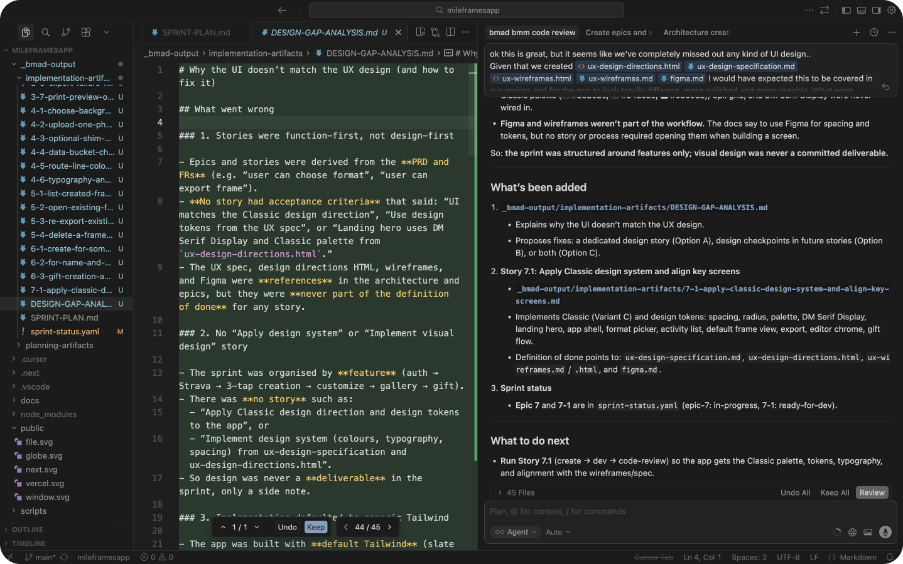
Testing, fixing, and branding
With a working app in place, I stepped away from BMAD and switched to standard Cursor agents for iterative refinements. BMAD is best reserved for starting a new project or for major new features; for smaller changes, a direct agent conversation is faster and more efficient.
Fixing a frustrating bug
I was stuck for a few hours on a bug preventing Strava activities from loading via the API. Lots of prompting, going in circles. I switched to Claude Opus 4.6 and it solved the issue immediately. A simple API scope configuration had been missed throughout. The model switch unblocked everything. It’s an important lesson that, whilst the latest models burn through tokens, they really make a difference to code quality and problem-solving. Cursor makes it easy to switch models at any time, without losing context in the current chat.
Back to Figma for branding
While fixing bugs, my design brain craved some visual creativity.
I jumped back into Figma to design a proper visual identity. I also didn’t want to spend hours in “traditional design mode,” so I decided to design the logo myself.
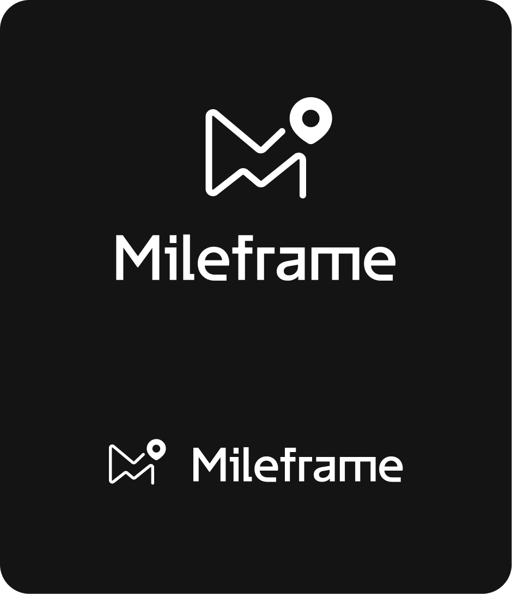
My "human-designed" logoI then used Figma AI to generate a brand spec sheet (colours, fonts) and explore how the identity would apply across the product.
I was impressed with the output. A few manual tweaks from me, but overall, a decent brand was spawned from just one human design logo.
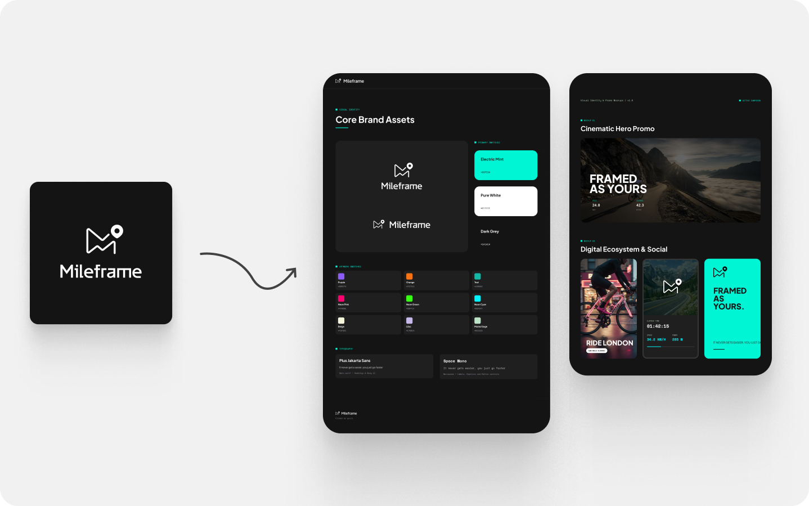
I fed all of this back into Cursor (putting exported frames from Figma into the docs folder) to refine the design system and UI properly.
The result: MVP done!
Roughly three days of work, spread across a weekend and a bit of Monday. A working web app with Strava OAuth, Google authentication, a canvas editor, route visualisation, multi-format export, user accounts, light and dark mode, and a brand identity I'm genuinely proud of.
Is it production-ready? Almost. It's sitting in Strava's developer review queue, which is the one gate I can't open myself. But functionally, it works.
The more interesting question is what this process proved. As a designer with minimal coding experience, I built something in three days that would have taken me weeks to even scope properly on my own. The BMAD planning phases meant I wasn't guessing. I had a PRD, an architecture document, epics, stories, and a design direction before a single line of code was written. That foundation made the build faster, less chaotic, and significantly more considered than anything I'd have produced by just prompting an AI and hoping for the best.
It's not magic. There's still a meaningful gap between what BMAD plans and what the developer agent produces on first pass. Human judgement, taste, and experience are what close that gap. But as an accelerator for the kind of structured, discovery and specification-first approach we champion at Nearform? It's compelling.
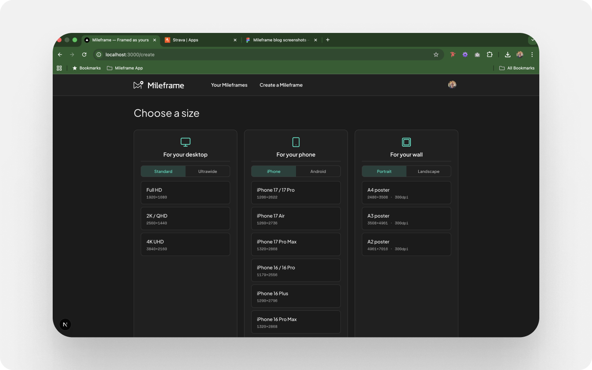
Finished app - Choosing a Mileframe size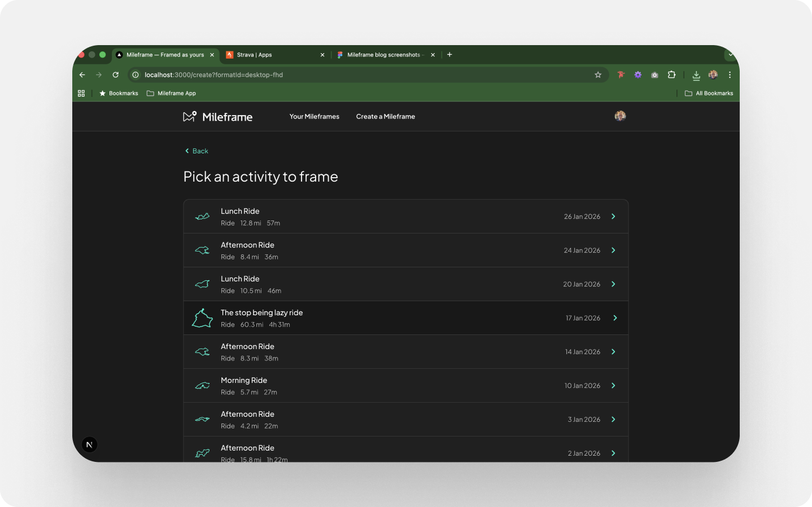
Finished app - Picking an activity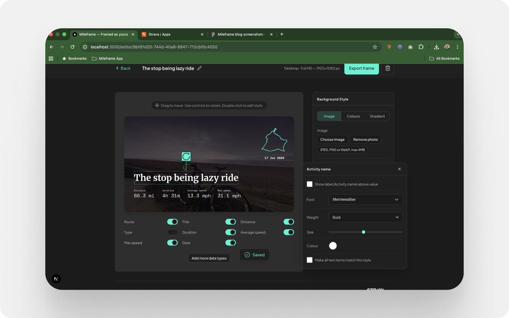
Finished app - Creating a MileframeDemo of the MVP for Strava approval
New features and refinements have been added since, and the app is now live at https://mileframe.vercel.app/
Reflections
What I liked about BMAD
Working through the questions with the agents reinforces good design thinking. It's a reminder of how a proper discovery phase should work. I wasn't blindly following a spec; I was being challenged to articulate better decisions. It genuinely felt like being in a workshop.
I did the majority of the planning work from my office sofa. Not my desk. Cycling videos on YouTube in the background. Focused but relaxed, processing things at my own pace rather than in a pressure-filled meeting room.
- The design system and visual identity steps were a pleasant surprise. I hadn't expected BMAD to engage with them meaningfully, but it built a solid foundation of visual rules that will support consistent iteration going forward.
- The responsive and accessibility strategy was thorough.
- The development process is measured and systematic. Each story requires human-led oversight. The agent writes the code, but you stay in control. It feels far removed from unconstrained vibe coding. (I did create the automated sprint command, though. Maybe a bit reckless, but a useful experiment!)
What wasn't so good
- Despite the depth of the planning phases, I expected the developer agent to produce a better first pass. There was a near-complete absence of UI polish and UX implementation, even though we'd spent considerable time planning both.
- There's a significant amount of refinement and fixing required to get to a truly shippable MVP state.
That said, this isn't entirely a bad thing. It highlights exactly where human expertise needs to stay firmly in the loop, and it reinforces that agents are accelerators, not replacements for design and development judgement.
Bottom line: The BMAD research, analysis, and planning phases are excellent for building a detailed understanding and a robust documentation set before a single line of code is written. The first-pass implementation provides a solid foundation to work from. It's a compelling accelerator for what has traditionally been a slow, often misaligned process, and it's particularly powerful for cross-team validation and for solo builders who want to think like a team.
The evolving product design landscape
The Mileframe project was a personal experiment, but it reflects something broader happening across the industry. The designers who will thrive in an AINE world are not those who resist new tools, nor those who abandon their craft in favour of just prompting their way to an output. They are the ones who understand where their skills are most valuable, and use AI to handle the rest.
Discovery, problem framing, user empathy, visual thinking, design critique, interaction detail, the ability to ask the right question at the right moment, and pragmatism. These are not skills that get automated. They are the skills that make AI-assisted development produce something worth using.
At Nearform, our Ignite workshops and discovery processes have always been founded on getting this thinking right before any code gets written. BMAD and the broader AINE toolkit accelerate and strengthen that process. They do not replace it.
Please reach out to learn more about how Nearform can help drive sustained business impact with our AINE teams.
In conclusion
If you are a designer wondering whether there is a place for you in this new world, the answer is yes. The tools are more accessible than you think. The learning curve is real but manageable. And the ability to go from concept to working product in a few days, while staying in full creative control, is genuinely exciting.